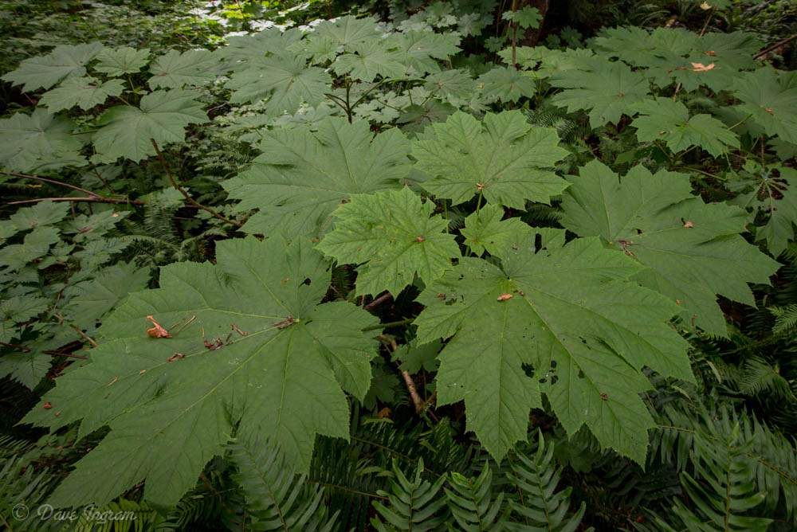
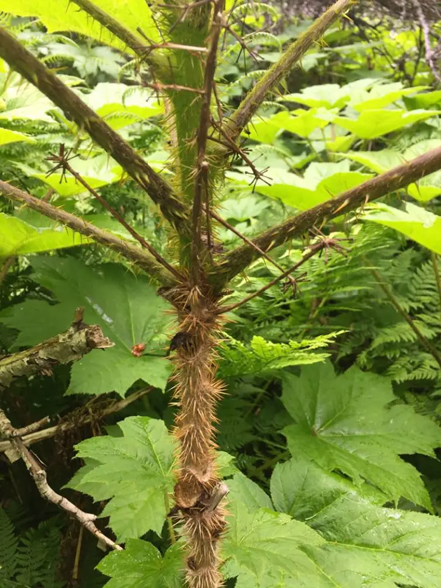

Devil's Club (Oplopanax horridus)
ch’átyay̓


Planting
Devil's Club is a forest understory plant that prefers moist, shady environments. Here are some planting tips:
- Choose a shaded area with rich, moist soil.
- Prepare the planting site by removing weeds and loosening the soil.
- Dig a hole slightly larger than the root ball and place the plant in the hole.
- Backfill the hole with soil and firm it gently around the plant.
- Water the plant regularly, especially during dry spells.
Usage
Devil's Club has traditional and medicinal uses:
- The plant's inner bark and roots are used in traditional Indigenous medicine.
- Devil's Club has been used for treating various ailments, including arthritis and digestive issues.
- It has cultural significance and is used in ceremonies and rituals.
Environmental Impact
Devil's Club contributes to the ecosystem in the following ways:
- The plant provides habitat and food for birds, insects, and small mammals.
- Devil's Club helps stabilize soils and prevent erosion in riparian areas and forested slopes.
- Its presence enhances the biodiversity and overall health of the forest ecosystem.